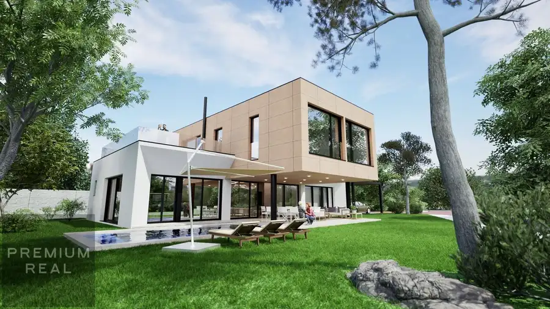
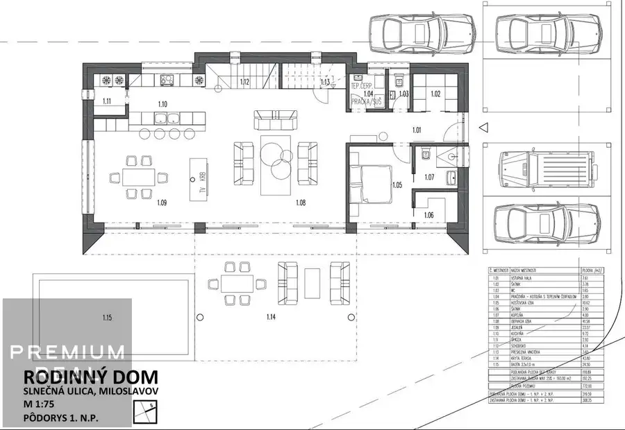
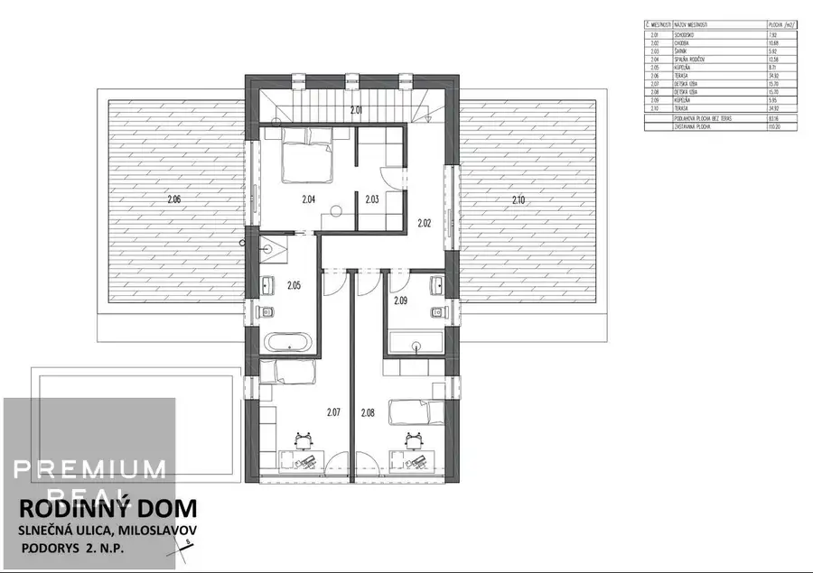
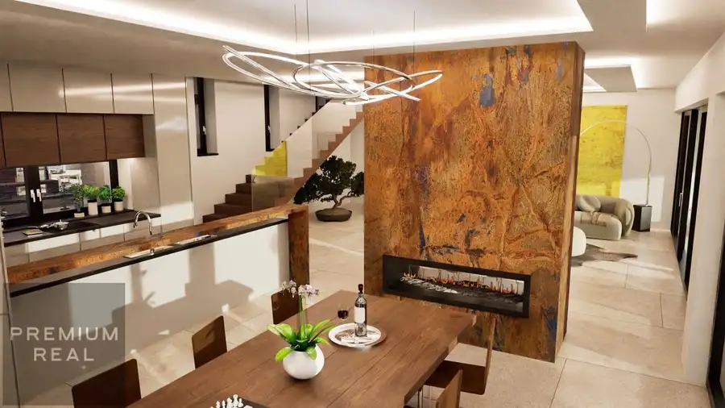
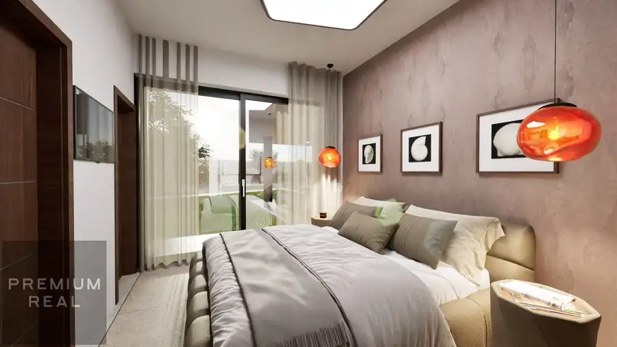
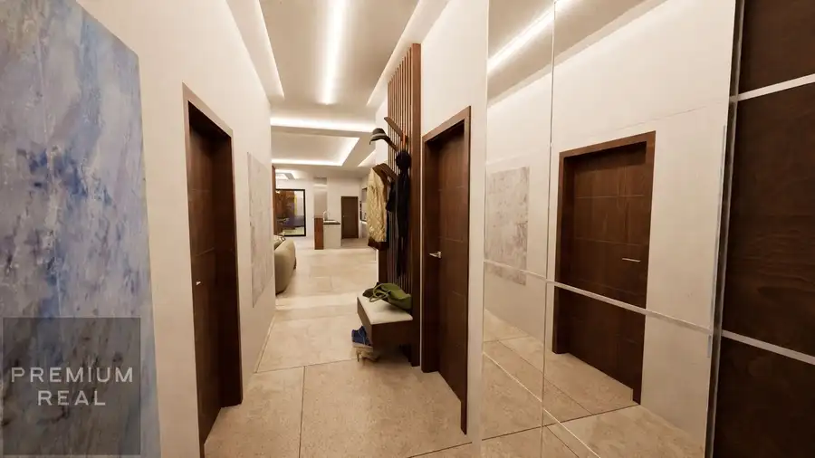
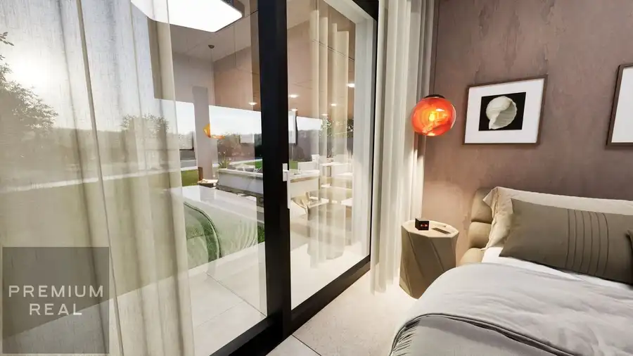

Dizajnový moderný 5 izbový rodinný dom V MILOSLAVOVE 6km od Bratislavy
Miloslavov








- Plocha225 m²
- StavNovostavba
- VlastníctvoOsobné
- Energetická triedaA
O nehnuteľnosti
Popis nehnuteľnostiPonúkame Vám na predaj DIZAJNOVÝ moderný 5-izbový dom s veľkým bazénom v tichej lokalite v Miloslavove len 6km od Bratislavy.Rodinný dom má dve poschodia s úžitkovou plochou 225m² a priestranným pozemkom s celkovou výmerou 772m². Jedná sa o nadštandardnú modernú stavbu a bol navrhnutý s veľmi praktickou dispozíciou pre nového majiteľa. Výhodou umiestnenia pozemku je tichá lokalita a dom nemá priamych susedov z predných troch strán.DISPOZÍCIADom má samostatný vstup v slepej tichej uličke s posuvnou bránou s až piatimi parkovacími miestami s možnosťou garáže.Prízemie: vstupná chodba s hliníkovými vstupnými dverami a priestorom pre šatník a vstavané skrine, technická miestnosť, WC, hosťovská izba so samostatnou kupeľňou s WC a šatníkom, priestranná obývacia izba s kuchyňou, špazou a jedálenskou časťou s barovým pultom s východom na veľkú prestrešenú terasu s prechodom k bazénu a do záhrady.Poschodie: tri samostatné priestranné izby/ spálne, kúpeľňa s WC s toho jedna hlavná spálňa je so samostatnou kúpeľňou a šatníkom s východom na priestrannú strešnú zelená terasu.TECHNICKÉ PARAMETRE RD- železobetónová základová konštrukcia- obvodové konštrukcie brúsená tehla Heluz- stropné železobetónové monolitické konštrukcie- hliníkové okná a dvere, terasové HST portály- sádrocementové omietky- anhydritové potery- zatepľovací systém EPS 18 - 20cm - tepelné čerpadlo pre vykurovanie aj chladenie- príprava zabezpečovací systém alarm a kamerový systém- prípojky pre optický internet a TV- 2x svetlovod s denným svetlom na poschodí- komplet vodovodné a kanalizačné rozvody- kompletná elektroinštalácia- príprava pre inteligentné ovládanie- klimatizačné rozvody do každej izby- vonkajšie prípojky inžinierskych sietí- betónový bazén 8*3,2m- záhradné úpravy s vysadenými stromami- prístupová cesta a chodníky s prémiovou dlažbou- oplotenie pozemkuLOKALITATichá lokalita v ktorej je dom postavený Vám ponúka pokojné bývanie s možnosťami na relax a luxus, ako je priestranný bazén v cene nehnuteľnosti, a na záhrade možnosť umiestniť exteriérovú saunu, popr fitness a vírivku. CENACena za dom je 595.000 EurOBHLIADKYV prípade záujmu nás neváhajte kontaktovať na tel. 0917 131 131 alebo e-mail : premiumreal.petrik@gmail.comĎalšie ponuky si môžte pozrieť nawww.premiumreal.skFINANCOVANIES financovaním nehnuteľnosti Vám vieme pomôcť v spolupráci s hypotekárnym centrom BROKER SERVICE GROUP SLOVAKIA a.s., spoločnosť spolupracuje so všetkými bankami na hypotekárnom trhu a spoločne si vyberiete pre vás najideálnejšiu ponuku.
Parametre
- Bezpečnosť
- Alarm, Elektronická brána, Kamerový systém, Videovrátnik
- Druh
- Rodinný dom
- Dátum zverejnenia
- 13. 02. 2025
- Energetický certifikát - príprava teplej vody
- A
- Energetický certifikát - vetranie/chladenie
- A
- Energetický certifikát - vykurovanie
- A
- Energetický certifikát budovy
- A
- Orientácia
- Juhozápadná
- Plocha pozemku
- 772 m²
- Počet izieb / miestností
- 5
- Počet kúpeľní
- 3
- Počet nadzemných podlaží
- 2
- Počet spální
- 4
- Rok kolaudácie
- 2025
- Rok výstavby
- 2025
- Stav nehnuteľnosti
- Novostavba
- Telekomunikácie
- Optická sieť, Káblová TV
- Terás
- 3
- Terén pozemku
- Rovinatý
- Typ
- Predaj
- Typ konštrukcie
- Tehlová, Železobetónová
- Vlastníctvo
- Osobné
- Vybavenie
- Terasa, Technická miestnosť, Sklad
- Vybavenie objektu
- Podľa požiadavky
- Vykurovanie
- Podlahové, Klimatizacia
- Zastavaná plocha
- 265 m²
- Úžitková plocha
- 225 m²
Kde to je


Mohlo by Vás zaujímať
 DomNové
659 000 €Moderný 5 izbový rodinný dom s bazénom SENEC Lužianky
Senec
245 m²
DomNové
659 000 €Moderný 5 izbový rodinný dom s bazénom SENEC Lužianky
Senec
245 m²
 DomNové
449 900 €Exkluzívny moderný 5-izbový bungalov v lukratívnej lokalite Chorvátsky Grob
Chorvátsky Grob
143 m²
DomNové
449 900 €Exkluzívny moderný 5-izbový bungalov v lukratívnej lokalite Chorvátsky Grob
Chorvátsky Grob
143 m²
 DomNové
387 000 €Moderný 4izbový rodinný dom bungalov 128m2 v Miloslavove 6km od Bratislavy
Miloslavov
128 m²
DomNové
387 000 €Moderný 4izbový rodinný dom bungalov 128m2 v Miloslavove 6km od Bratislavy
Miloslavov
128 m²